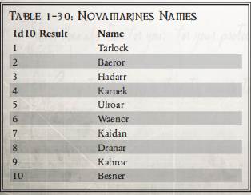
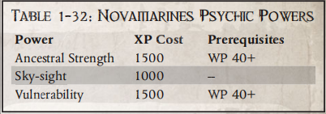

新星战士
"银河系之大几乎无法满足人类的需求。异种必须被清除，这样我们才能获得皇帝旨意赋予我们的一切"。
——牧师古斯图斯-菲奥雷
新星战士成立于大异端之后，它选择将重点放在原体基利曼的教诲和面向未来的建设上，而不是关注帝国的危机状态。千百年来，新星战士始终坚持这一理念。他们不断努力履行自己的义务，作为极限战士军团真正而崇高的继承者，协助帝国的其余部分。
战团摘要 成立： 二次建军 章节世界: Honourum 要塞修道院： 新星要塞 基因种子：极限战士 前身：极限战士 |
历史
荷鲁斯异端的悲剧发生后，人们决定不允许一个人指挥整个星际战士军团。无论一个人看起来多么高尚和忠诚，这种权力级别都会给腐败和灾难提供太多机会。极限战士军团的原体、《阿斯塔特法典》的作者罗布特-吉利曼（Roboute Guilliman）提出了一个永久解决这一威胁的方案。在他的指导下，星际战士军团的所有幸存成员将被划分为 1000 名成员的星际战士战团。原体以身作则，立即将他的极限战士军团划分为规模适当的继承战团。
新星战士是原体基利曼在二次建军中直接创建的战团之一。在创建战团时，原体任命卢克莱修-科尔沃（Lucretius Corvo）为首任战团长。在被任命之前，科尔沃曾在极限战士团中长期服役。在异端期间，他曾在阿斯塔加尔与怀言者军团的战斗中立下汗马功劳，并在大十字军东征期间率领他的连队在无数次战斗中立下赫赫战功。吉里曼此前曾授予科尔沃无数荣誉，并对这位星际战士信任有加。正是由于这些原因，在建立独立的星际战士战团时，原体才放心地指派这位战斗兄弟负责指挥。
新任战团长对他的首领和基利曼撰写的《阿斯塔特法典》忠心耿耿。为了将新战团与前辈们区分开来，他首先确定了战团的颜色和图标。该战团与众不同的四叶草纹章来自科尔沃的个人纹章。当战团被指派监管 Honourum 世界时，战团长科尔沃很快就接受了该世界的一种本土方式。该星球的文化传统是将纹身作为个人荣誉的一种形式，这种纹身被改编成了战团的传统。
新星战士在建团之初集体宣誓，誓死保卫终极星域，抵御人类的敌人。在整个历史中，他们履行了这一誓言，并经常超越誓言。虽然该战团并不专注于十字军东征，但也经常将部分资源投入到此类事业中，并响应来自远离家园的世界的援助请求。这种在如此广阔的区域内投入兵力的意愿，往往意味着各连队会被孤立数百年之久。尽管与世隔绝，但他们的传统和兄弟情谊却始终如一，部分原因在于他们对《阿斯塔特法典》和极限战士所建立的传统的强烈忠诚。
在长达 10 千年的服役生涯中，新星战士曾与无数敌人作战，并在历史上取得了辉煌的战绩。虽然他们以无数种方式为帝国服务，但他们的首要任务之一是抵御异种入侵的威胁。自成立以来，该战团一直致力于消灭所有异形，这可以追溯到大远征时期。审判庭所现在所称的 "一元统治 "是该战团的核心理念，也是他们许多著名战役的特色主题。
杰里科边区上著名的新星战士 以下是新星战士战团中声名显赫的星际战士。 科尔本-奈尔兄弟 纳伊尔兄弟在来到埃里奥克守望要塞之前就是一名出色的战斗兄弟，他与异种敌人作战的技能在这里得到了进一步提高。在借调之前，这位星际战士参加了一次为期二十年的远征，穿越了银河系边缘、终极星体附近的各个系统。作为战术审查的一部分，他开始仔细研究各种异形使用天然武器的不同技巧。探险成功并光荣返回后，他立即请求加入死亡守望队。 自从加入死亡守望以来，奈尔修士在执行任务期间和在守卫要塞被关押期间一直在研究异种。他研究的重点是找出一种普遍适用的方法，以应对与异种的近战，并对各种形式的自然武器做出适当的反应。在继续扩大研究范围的同时，他经常要求星际战士向他提供他们在执行任务过程中发现的任何可用信息。虽然他几乎没有完成论文的迹象，但很明显，他已经成为一名非常能干的反异种部队近战战士。 远古兄弟霍斯特-该隐 在死亡守望中服役的星际战士无畏寥寥无几。大多数在战斗中阵亡并获得继续服役特权的人都会首先返回原属战团。只有极少数人对死亡守望如此忠心耿耿，以至于在第一次阵亡后的几个世纪里仍在为死亡守望服务。关于杰里科边区上的几艘死亡守望无畏的故事大多是谣传和传说。许多人的故事随着战斗兄弟服役期满并返回原战团而失传。古老的该隐修士的传说笼罩在神秘和不确定之中，因为没有任何已知的文件可以证实他所讲述的故事。 很明显，除了他自己的画像外，他的画框上还印有新星战士的图标。同样清楚的是，他是死亡守望的忠实成员，自从他被安葬在金属框架中以来，他已经无数次证明了自己对组织的价值。然而，人们不知道他为什么再也没有回到他原来的战团，更奇怪的是，新星战士声称没有任何记录表明他们曾经将这个名字的星际战士借调到死亡守望。 |
苍白废墟
虽然该战团的记录中没有提及此事，但在泰拉皇宫中竖立着一块石碑，表彰新星战士在 M34 年对抗苍白废墟的行动中做出的贡献。这块石碑赞扬了新星战士的功绩，称他们 "摧毁了无法消亡的东西"。审判庭的调查表明，该事件的其他记录被刻意压制，但事件显然始于食尸鬼星。已发现的部分记录表明，威胁的本质是异种生物，在冲突过程中，可能有不止一个星际战士战团被彻底摧毁。如果不是得到如此显著的认可，这一事件可能会被彻底遗忘。
洛基克罗尔异种大屠杀
M37 年初，审判庭发布了针对 Lok'kroll 异种的灭绝法令。这些狰狞的生物受到了双重诅咒。因为它们不仅是无脊椎异种，而且还是毁灭力量的忠实信徒。此时，这些生物已经在被称为 "帝怒风暴 "的亚空间异常点附近建立了一个小型帝国。在扩张过程中，这些生物摧毁了许多帝国设施，包括几个殖民世界以及对帝国战争至关重要的采矿和农业世界。
为了应对这一威胁，新星战士将战团的所有连队集结成一支统一的部队——这一壮举自此之后再未实现过。在帝国海军和一支来自菲鲁斯的帝国卫队的配合下，这支战斗部队在不到五十年的时间里完成了异种灭绝行动。其中一些前哨站是用灭绝级武器摧毁的，而其他世界则是用更传统的方法攻击的。在许多从污秽中解放出来的世界上，帝国恢复了殖民统治。从那时起，再也没有人确认看到过这些异种。现在人们相信它们已经灭绝了。
正直之死
887M39 年，人们在沃尔-塞康德斯附近看到了太空废墟 "正直之死"。在最近的几个世纪里，这座古老的废墟曾出现过两次，每次都是在泰伦部队出现在附近的世界之前。它的归来被认为是不祥之兆，于是立即发出了请求星际战士援助的总号召。新星战士和饮血者第一连的成员都响应了援助号召。
两支队伍表现出了极大的合作精神，向这艘巨型战舰部署了近两百名配备了战术无畏装甲的星际战士。在两个月的时间里，联合部队彻底清除了这艘太空巨舰上猖獗的基因窃取者。由于异种非常适合在狭窄而有毒的环境中作战，两个战团都遭受了损失。 虽然这场战斗在装甲损坏和人员伤亡方面代价惨重，但最终的战果却令人惊叹。隐藏在废船废墟深处的是一艘保存完好的 STC。机械修会欣然接受了这件无价之宝，并以一艘新服役的攻击巡洋舰作为回报。
卢克索起义
最近，在 812M41 年，新星战士从受混沌影响的叛乱中解放了卢克索世界。叛徒阿尔法军团的混沌星际战士潜入了这个星系，将一小撮混沌邪教徒变成了一股强大的力量，威胁要统治这个世界。当该军团增派部队登陆时，为数不多的幸存忠实信徒似乎已不可能再继续控制这个星球。
卢克索是军务部在整个终极星域分配物资的供应链中的关键要素。如果没有它的支持，帝国卫队在整个地区的力量可能会长期瘫痪。新星战士没有等待帝国的指令，他们意识到了所带来的危险，并主动采取了行动。在很短的时间内，该战团的星际战士就击溃了叛军，并以压倒性的力量消灭了阿尔法军团。由于这颗行星距离他们的家园相对较近，该战团充分发挥了资源优势，动用了他们储备的终结者装甲、无畏、掠食者和兰德掠袭者，肃清了混沌联军。这使他们能够迅速履行神圣誓言，保卫该地区免受帝国统治的一切威胁。
家园
建国之初，罗布特-吉利曼（Roboute Guilliman）授予新星战士对霍努鲁姆（Honourum）星球的统治权。在他们存在的 10 个千年里，他们一直以负责任的态度守护和开发着这颗星球上的资源。当他们获得其效忠权时，这颗行星代表着 Segmentum 的北部边界。从那时起，他们的安全区域大幅扩大，但他们维护整个区域安全的责任并没有改变。
这颗星球的特点是残酷的风暴、野蛮的海洋和贫瘠的山脉。大部分原生生物都是原始植物和地衣。动物群主要由海洋无脊椎动物组成。许多更复杂的生物体都使用了强效毒素，这些毒素对人类和星球上的本地物种同样有效。世界上许多地区都存在重金属污染，导致许多植物中毒。星球似乎在积极抵御任何生命的入侵。
人类在星球险恶的环境中不断挣扎，甚至连立足之地都没有。野蛮的人类由游牧部落的狩猎采集者组成。这些野蛮人不断迁徙，以避开地球上最恶劣的气候，并不断觅食。他们缺乏资源或能力来有效地建立矿山或提炼和塑造复杂的金属。 事实证明，那些能在这种恶劣环境中生存下来的人是成为新星战士成员的不二人选。该战团将当地人的纹身仪式传统作为战团文化的一部分。战斗兄弟通常会在自己的身体上增加一个纹身，以纪念自己的伟大成就。这些文身可以是常规动作，如完成一名有志者的入会仪式或分配到一个新的连队。更常见的情况是，这些纹身象征着星际战士在一场战役中的行动。当战团成员重聚时，他们往往会花上几个小时展示他们最新的纹身，同时讲述导致最新艺术品的成功和悲剧。
基因种子
新星战士的基因种子与极限战士——他们的前身——的基因种子完全一致。为了保持这一高贵血统，它没有受到污染的迹象，并能产生全系列的星际战士植入物。他们的基因种子储备充足，据说行政部曾使用新星战士基因种子作为创建继承者战团的基础。他们小心翼翼地保护着自己的基因种子，就像他们履行着保卫终极星域的神圣职责，小心翼翼地维护着由他们看管的众多古代战争机器一样。所有这些元素都代表了该战团的核心传统，被认为是保存该战团的绝对关键。
理念
新星战士有着光荣的历史，他们曾为保卫帝国而英勇作战，并将继续保持这一光荣传统。这些星际战士认为，他们有权利也有义务继续追随他们的原体和前身军团所树立的榜样。他们理解并坚信，唯一适当的方式就是严格遵守《星际战士法典》的规定。圣典是他们人生的灯塔，它指引着他们做出决定，并不断促使他们按照自己的职责行事。恪守法典是他们作为战团存在的最重要方面之一。这种对文本的忠诚帮助新星战士自成立以来一直保持着基本不变的传统。
新星战士不信奉帝国崇拜。他们对皇帝、他们的原体以及那些在过去的时代中为他们战团服务过的星际战士怀有最崇高的敬意。然而，他们并不把这些人当作神或神圣的存在来崇拜。相反，他们认为这些人都是重塑银河系的杰出人才。对于新星战士来说，这些人是他们效仿的理想榜样。虽然这可能要求他们以不可能达到的高标准来要求自己，但他们乐于接受这一责任。这些 "战斗兄弟 "乐于接受完美的挑战，并在未能达到完美的时候严格接受惩罚和忏悔。
与他们对帝国宗教的世俗看法形成鲜明对比的是，他们认为《阿斯塔特法典》是一部受神灵启示的作品。他们从不评论是哪位神灵启发了这部作品，但这部作品被认为不仅仅是一部关于战争的论文。对星际战士来说，这部巨著几乎是每项行动的指南。他们必须在生活中不断思考、遵守和应用。虽然他们承认并非所有的星际战士分队都能如此严格地执行法典的指示，但他们更愿意将自己树立为必须遵守法典的榜样。
正如他们的原体所吩咐的那样，该战团的中心任务是保卫终极星域免受人类的任何威胁。新星战士认为，消灭所有这些亵渎神明的异种是他们庄严的职责，这样帝国就可以控制整个星系，而不必担心遭到报复。这些异种永远不可信。试图与这些生物寻求外交解决方案是毫无意义的，因为没有任何可以接受的讨论点。消灭它们是战斗兄弟唯一可以接受的选择。
由于不能容忍异种，新星战士热衷于派遣一些最有经验、最有能力的成员加入死亡守望，这种服务被该战团的战斗兄弟视为一种独特的荣誉和特权。通过这种方式，新星战士可以收集到不属于其战团直接经验的异种信息，正如死亡守望可以发现对付其他异种的方法一样。这种与死亡守望的持续合作使该战团与死亡守望组织的关系异常密切。
新星战士人物 从他们遥远的母星 Honourum 开始，新星战士的支持和行动范围覆盖了 Ultima Segmentum 的广阔区域，一直延伸到 Halo Stars 和更远的地方。作为极限战士的后裔，该战团以在这一区域内与皇帝的所有敌人作战为荣，其各连队很少在一次冲突中联合起来，而是与相隔数千光年的敌人作战。所有这一切使新星战士对许多不同的敌人有了广泛的了解，并使他们学会了根据需要和不断变化的角色需求进行调整的能力。新星战士星际战士可获得以下好处： 玩家自选的两种特性+5、禁忌学识（异形）技能和虚空传说单人模式能力。 举止：虚空流浪者 新星战士是所有阿斯塔特中分布最广的一支，他们的连队不仅遍布终极星域，而且往往与最近的兄弟连队相距数百上千光年。这部分是由于他们的战团的性质和他们母星所在的领域，使他们有责任保护广阔的太空区域。这也是新星战士的特性之一，他们从极限战士团中继承了巨大的自豪感，这驱使他们派遣自己的连队进行征战或前往遥远的太空区域，以证明他们对皇帝的忠诚和他们战斗兄弟的技能。 然而，舰队的分散性使其有别于那些拥有家园或因其历史而与特定地区或分部联系在一起的舰队。虽然所有星际战士战团都是皇帝派他们去哪里，他们就在哪里战斗，他们会被带到遥远的世界，与各种各样的敌人作战，但对于新星战士战团来说，他们不会再回到哪个星球或世界，也不会再回到战团长居住的要塞修道院。这是每个新星战士心中的一个小而重要的事实。 新星战士还经常对银河系，尤其是终极星域的荒野了如指掌。虽然这些知识在专家或学者看来可能并不严谨，但新星战士战友或其战团成员很有可能见过或到访过某个世界，或面对过与杀戮小队当前情况相关的外星敌人。虽然新星战士并不完全了解某个主题或星球，但他很可能对此有所了解，通常是以兄弟间流传的故事的形式。 |
作战原则
新星战士极其注重维护《阿斯塔特法典》的文字和意图。因此，他们的军事方法都忠实于法典的核心原则。这些星际战士在组织、战术、甚至持续训练方法上都遵循圣典的指示。在《法典》提供指令的情况下，该战团会严格遵守。而对于那些不常见的、指令不明确的情况，他们则会严格解释其意图，并以最符合法典中其他材料的方式行事。
为了与法典保持一致，战团的每个连队都被分配了与其指定角色相符的具体任务。除了返回补给时，四个战斗连经常在整个终极星域进行长时间巡逻。值得注意的是，新星战士非常愿意为任何需要帮助的人提供帮助。在他们的历史中，几乎所有的帝国组织都需要他们的帮助。其中包括审判庭、军务部，甚至是行商浪人。更值得注意的是，这也经常包括其他星际战士分部。新星战士曾无数次派出大量部队，协助其他战团的战斗兄弟战胜远在终极星域边界之外的威胁。
尽管在历史上交战频繁，但新星战士仍成功地保持了装备精良的武器库。其中包括自建军以来就一直保留下来的大量装备和车辆。其中一些装备在大远征时就已完好无损地保留下来并投入使用。虽然并非所有这些装备都会经常使用，但他们的终结者装甲足以装备整个第一连。同样，该战团还拥有大量的无畏，足以保存该战团许多最优秀的战斗兄弟的生前记忆。战团的锻造厂一直在维护和重建这些储备，以便在急需的时候不会出现短缺。
千百年来，战团的标准装备一直保存完好，同样，他们的战争遗物收藏也在不断扩大。在要塞修道院神圣的殿堂里，有数百件他们在历史上收集的独特设计。在危急时刻或为了表彰战士的功绩，这些遗物会被有选择性地分配到战场上使用。由于其中许多物品超出了《阿斯塔特法典》的具体范围，因此即使是那些获得这些物品的人也很少使用它们。
新星战士过去
| 1D5结果 | 过去经历 |
| 1 | 钛星人猎手：杰里科边区的新星战士曾不止一次与钛星人交战，并在这些战斗中吸取了惨痛的教训。你是其中一些与钛星人战斗的老兵，曾多次面对蓝皮肤外星人，了解了他们的许多行为方式，并根据遭遇的性质对他们产生了深深的憎恨或勉强的尊敬。 |
| 2 | 人类的远古敌人：在光环星的荒野和终极星域的远方，有无数失落的世界和古老的帝国，它们与人类文明相隔遥远，被时间遗忘。你曾在其中一个世界上行走，并与居住在那里的黑暗生物作战，它们是从古代废墟和深墓中产生的。 |
| 3 | 虚空守护者：在如此广袤的区域中工作的一部分就是不断地在虚空中从一个世界到另一个世界，跨越遥远的距离。你在船上度过了许多年，不只是在货舱和船员宿舍里等待战斗，而是探索和了解船只是如何运行的。这些知识意味着您对帝国的许多船只都很熟悉，即使是最庞大或迷宫般的甲板和船舱，您也能找到方向。 |
| 4 | 穿越黑礁： 黑礁是杰里科边区的一块深海污点，是一个充满变幻莫测的潮汐和流浪世界的危险之地，可以在瞬间将飞船击成灰烬。你是为数不多的穿越冥河断裂带，进入黑礁后还能活着回来的人。这既是您的骄傲，也是一个动人的故事，它标志着您的技术和运气。 |
| 5 | 奥特兰玛兄弟：新星战士与他们的创始战团极限战士保持着密切的联系，只要有机会就会与他们并肩作战。你们曾在杰里科星区或终极星域的其他战场上与极限战士一起服役。因此，您与极限战士的战友们亲如兄弟，并乐意与他们并肩作战。 |

新星战士原体诅咒：蔑视异种
虽然所有星际战士都憎恨人类的敌人，尤其是那些潜伏在星际中掠夺帝国世界的敌人，但新星战士对异种的厌恶甚至超过了大多数同类。在数千光年的太空中，新星战士曾在无数次战场上与银河系中最强大、最邪恶的异形发生冲突。起初，这种仇恨与普通的星际战士没有什么区别，只是在战斗中面对他们时才会形成强烈的蔑视，并拒绝他们对神帝领域的阴险进攻。随着时间的推移，这种蔑视会不断扩大，包括所有形式的外星生物，甚至是那些对帝国没有多大兴趣或威胁的生物，直到最后他们无法忍受异种生物的存在，即使是以谨慎的战术和紧张的战场外交措施为代价。
1 级（偏爱目标）： 新星战士不遗余力地以异形为目标，确保不放过任何一个打击正在逼近帝国的外星侵略乌云的机会。如果可以选择，他总是倾向于迎击外星敌人，或打击能对异种造成最大伤害的目标，即使其他行动会带来更多荣耀。如果可以选择，战兄必须偏向异种目标，但如果这会直接危及他的杀戮小队或导致任务失败，他可以进行挑战性（+0）意志力测试，无视可恨的异种而采取不同的行动。
2 级（近乎人类）： 银河系中的异种数不胜数，并非所有异种都像大群的兽人、神秘的灵族、嗜血的泰伦或阴险的钛星人那样显而易见。有些异形的形态与人类并不遥远，或者来自无害的文化，几乎没有威胁。战斗兄长不会被这种异形的苍白表象所迷惑，他认为异形无处不在，甚至影响到了人类世界，在那里变异很容易掩盖异形的腐败。战兄对异种的憎恨延伸到了任何带有异种污点的人或事，哪怕是与外星人接触过的人或流着外星人血液的人。在他眼中，这些被玷污的人类和良善的异形并不比真正的异形好多少，因此应该受到同样的对待。
3 级（永恒的敌人）： 任何异形都不可能成为战斗兄弟的盟友，异形在任何情况下都不会停止成为他最憎恨的敌人。即使是在谨慎起见的情况下（比如为了对抗更强大的敌人）与异形势力暂时结盟，战兄也不会接受，如果他们真的这样做了，战兄就会把自己的同类视为叛徒。在异种和帝国之间进行外交活动的情况下，例如停火或交换战俘，战斗兄弟会拒绝参加，因为他对任何形式的停战都感到不满，因为敌人只配死亡。在战斗兄弟被迫与异种和平相处的情况下（如指挥官的命令或杀戮小队的意愿），他必须进行一次非常困难（-30）的意志力测试，才能与异种和平相处，即使如此，他仍会保持敌意，但会克制自己的暴力行为。
| 中文 | 英文 | 消耗 | 类型 | 先决条件 |
| 普通知识（任何2个） | Lore: Common（any two） | 100 | 技能 | |
| 普通知识（任何2个）+10 | Lore: Common（any two）+10 | 100 | 技能 | 普通知识（任何2个） |
| 普通知识（任何2个）+20 | Lore: Common（any two）+20 | 100 | 技能 | 普通知识（任何2个）+10 |
| 灌输知识（任何） | Infused Knowledge | 600 | 天赋 | INT40 |
| 天赋异禀（任何） | Talented(any) | 600 | 天赋 |
新星战士单人模式能力
虚空传说
行动：自由行动
所需等级：1
效果：新星战士的足迹遍布整个银河系，他们的集体知识和经验覆盖了银河系的大部分地区。这些知识通常会通过故事和更多资深成员的建议传授给新招募的成员，然后战兄可以根据需要加以利用。战兄可以利用这些知识进行 "知识：普通"、"学术 "或 "禁忌 "技能测试，就像他拥有特定技能和相关专长一样。如果他拥有想要测试的技能和特长，他将获得 +10 的测试加成。战兄在每个游戏阶段可使用此能力的次数与他的等级相等。
提升： 在等级 6 时，战斗兄长的知识变得更加丰富，如果他通过了任何 "知识：普通"、"学术 "或 "禁忌 "技能测试，他都能获得额外的成功度。
新星战士小队模式能力
新星战士攻击模式：弱点
行动：半行动
消耗：2
持续： 是
特效：新星战士可以利用自己对敌人的广泛了解，预测出敌人盔甲上的弱点或皮甲上的脆弱部位。这些信息在第一次面对敌人时非常有用，因为他们几乎没有实际战斗经验，只能靠本能和训练来指引方向。在支援范围内的战兄及其小队成员会增加 +10 的群殴加成，并减少 -10 的精准射击惩罚。此外，兄弟战队在进行精准射击时造成的致命伤害会在所有其他因素之后增加 +2。如果兄弟战队在群殴敌人时发出精准射击，他将同时获得武器技能的加成和召唤射击惩罚的减少。
提升： 等级 4 时，战斗兄弟在进行精准射击时不会受到惩罚。等级 7 时，战斗兄弟会将召唤射击的致命伤害奖励提高到 +3。
新星战士防御模式：战术再评估
行动：半行动
消耗：2
持续： 是
特效： 拥有适应性强的战斗理论的一部分，就是能够在面对敌人时随时改变战术。如果攻击失败，战斗兄弟可以迅速改变姿态，或迅速撤退或前进，以占据更有利的位置。如果作为小队的一员使用，这种能力可以让杀戮小队根据需要调整位置或撤退，以测试敌人的防御和自己的攻击力。战斗兄长及其支援范围内的小队成员可以在其回合结束后（在其他 PC 或 NPC 行动之前）立即花费反应力来逆转他刚刚采取的移动行动。兄弟战队会立即返回到他回合开始时的位置，就像他正常移动时一样。如果战斗兄弟在自己的回合中没有主动移动（例如被敌人或环境影响移动），或者无法再回到之前的位置（该位置已被敌人占据，或因坍塌或漂移到太空中而不复存在等），则此能力无效。在后一种情况下，他将沿着他在回合中走过的路线尽可能靠近他原来的位置。
改进： 在等级 5 时，战斗兄弟对自己的移动有了更多的控制，使用该能力时，他可以返回到距离原位置 5 米范围内的任意一点。
新星战士灵能

祖先力量
行动 全行动
对抗：否
范围：自身
持续： 是
描述 汲取极限战士的纯正血统，新星战士智库能在一段时间内提升自身能力，使其在战斗中更加强大。这种提升并非没有危险，即使短时间内提升智库的原始潜力也会产生负面影响，在力量消失后会消耗掉强化后的能力。当这种能力显现时，智库会获得相当于其灵能等级四倍的点数。然后，他可以使用这些点数以一换一的方式增加他的任何特性（武器技能和弹道技能除外）（例如，如果他的灵能等级的四倍是 24 点，那么他最多可以在他的特性中分配 24 点）。当该能力持续时，智库在任何情况下都会拥有增加的特性，包括增加他的特性奖励（如果适用）。
当该能力结束时，会对智库产生消耗效果，任何增加的特性都会在一小时内受到与增加量相等的惩罚（例如，如果智库的力量增加了 10，那么在能力结束后的一小时内，他的力量会减少 10）。在此期间，智库不能使用该能力。
天眼
行动 半行动
对抗：否
范围：200 米 x 灵能等级半径
持续： 是
描述 新星战士智库意识苏醒，从高处俯瞰战场，捕捉地面上最精密的传感器也可能忽略的细节。然而，当他凝视战场时，他的心思却不在这里，他很容易受到攻击，也无法进行适当的防御。当这种能力处于激活状态时，智库可以使用 "完全行动 "将视角转移到高于或低于当前位置 100 米的有利位置。就他的所有感官（视觉、听觉、嗅觉等）而言，虽然他的身体不会移动，但他会被视为站在新的位置。这种能力还能增强他的感官，在使用天眼将意识转移到新位置时，他在所有感知和基于感知的技能测试中都会获得 +30 的加值。在使用天眼时，智库会进入一种类似恍惚的状态，他对身体周围发生的事情一无所知，在下一个回合开始前无法进行自卫或对危险做出反应。在该能力激活期间的每个回合开始时，智库都可以选择是否使用天眼，或者将他的感知位置从范围内的一个地方换到另一个地方。
脆弱
行动 半行动
反对 是
范围： 10 米 x 灵能等级
持续： 是
描述 新星战士智库可以利用敌人的弱点，使其更容易受到某种攻击或某种形式的伤害。这在对付强大的敌人时尤其有用，因为这些敌人通常会非常顽强地抵御伤害，让智库的小队有机会对其造成伤害并将其击败。当智库激活这项能力时，他会在范围内选择一个目标，并对其进行挑战性（+0）意志力测试。如果他成功了，那么目标就会变得脆弱。智库会为敌人选择一种易受攻击的伤害类型：冲击、能量、撕裂或爆炸。当该能力持续时，任何该类型的伤害都会对该生物产生相当于智库灵能等级的加成（例如，如果一个灵能等级为 6 的智库让一个敌人易受爆炸伤害，而它被一把造成 2d10+5 伤害的爆弹击中，那么它现在将受到 2d10+11 伤害）。
新星战士装饰
以下物品为新星战士的战斗兄弟可携带的战团饰品。
奥特拉玛桂冠
新星战士与奥特兰玛之间的密切关系包括，该战团的战斗兄弟们都希望能瞻仰他们在奥特兰玛的原体之墓。许多战斗兄弟一生中至少要进行一次这样的朝圣，并借此加强他们的决心以及与奥特兰玛战团的联系。完成朝圣的战斗兄弟将获得奥特兰玛的桂冠，他可以光荣地佩戴桂冠。兄弟可以在创建角色时选择让自己的角色获得奥特兰玛桂冠（也可以在之后的朝圣中获得，具体由游戏管理者决定）。如果拥有奥特拉玛之冠的新星战士战斗兄弟是小队队长，那么在技能、天赋和小队模式能力方面，他将小队中的任何极限战士视为新星战士（反之亦然）。